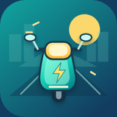

คะแนน0
0 ม.
กรุงเทพฯ
โบนัส
ทางแยก→
←
กรุงเทพฯ · พร้อมลุยไหม?
ทางลัดสุดป่วน
LUCY · BANGKOK RUSHลูซี่รู้จักทางลัด… อีกแล้ว
↔ เปลี่ยนเลน / เลี้ยว↑ กระโดด↓ ก้มหลบ

LUCY · BANGKOK RUSH
เล่นจากหน้าจอโฮม
เล่นเต็มจอ ลดการชนกับท่าทางของเบราว์เซอร์ และเปิดเกมได้ในแตะเดียว
↔ ↑ ↓
ไม่ต้องสมัครสมาชิก · ไม่ต้องดาวน์โหลดจาก App Storeเริ่มปัดจากกลางจอ ถ้าปัดลงแล้วแอปปิด ให้แตะค้างเพื่อก้มหลบ หรือเปิดเกมจากไอคอน
กำลังสตาร์ทรถ…